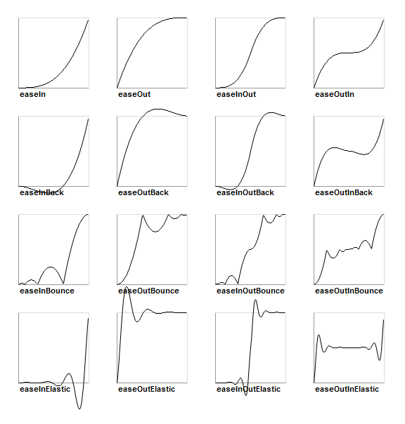
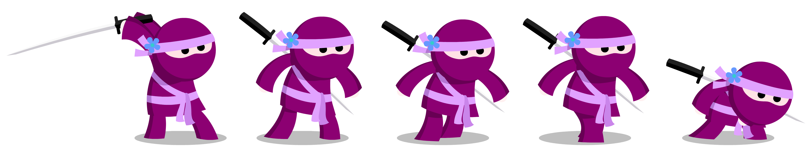

public function new()
{
super();
addEventListener(EnterFrameEvent.ENTER_FRAME, onEnterFrame); (1)
}
private function onEnterFrame(event:EnterFrameEvent):Void (2)
{
trace("Time passed since last frame: " + event.passedTime);
bird.advanceTime(passedTime);
}Animations
Animations are not only a fundamental part of any game; even modern business apps are expected to provide smooth and dynamic transitions. Some well placed animations go a long way towards providing a responsive and intuitive interface. To help with that, Starling offers a very flexible animation engine.
If you think about it, there are two types of animations.
-
On the one hand, you’ve got animations that are so dynamic that you don’t know beforehand what exactly will happen. Think of an enemy that’s moving towards the player: its direction and speed need to be updated each frame, depending on the environment. Or physics: each additional force or collision changes everything.
-
Then there are animations that follow a meticulous plan; you know from the beginning exactly what will happen. Think of fading in a message box or transitioning from one screen to another.
We will look at both of these types in the following sections.
EnterFrameEvent
In some game engines, you have what is called a run-loop. That’s an endless loop which constantly updates all elements of the scene.
In Starling, due to the display list architecture, such a run loop would not make much sense. You separated your game into numerous different custom display objects, and each should know for itself what to do when some time has passed.
That’s exactly the point of the EnterFrameEvent: allowing a display object to update itself over time. Every frame, that event is dispatched to all display objects that are part of the display list. Here is how you use it:
| 1 | You can add a listener to this event anywhere, but the constructor is a good candidate. |
| 2 | That’s what the corresponding event listener looks like. |
The method onEnterFrame is called once per frame, and it’s passed along the exact time that has elapsed since the previous frame.
With that information, you can move your enemies, update the height of the sun, or do whatever else is needed.
The power behind this event is that you can do completely different things each time it occurs. You can dynamically react to the current state of the game.
For example, you could let an enemy take one step towards the player; a simple form of enemy AI, if you will!
Tweens
Now to predefined animations.
They are very common and have names such as movement, scale, fade, etc.
Starling’s approach on these kinds of animations is simple — but at the same time very flexible.
Basically, you can animate any property of any object, as long as it is numeric (Float, Int, UInt).
Those animations are described in an object called Tween.
| The term "Tween" comes from hand drawn animations, where a lead illustrator would draw important key frames, while the rest of the team drew the frames in-between those frames. |
Figure 1. The different frames of a tween.
Enough theory, let’s go for an example:
var tween:Tween = new Tween(ball, 0.5);
tween.animate("x", 20);
tween.animate("scale", 2.0);
tween.animate("alpha", 0.0);This tween describes an animation that moves the ball object to x = 20, scales it to twice its size and reduces its opacity until it is invisible.
All those changes will be carried out simultaneously over the course of half a second.
The start values are simply the current values of the specified properties.
This sample showed us that
-
you can animate arbitrary properties of an object, and that
-
you can combine multiple animations in one tween object.
Apropos: since scaling, fading and movement are done so frequently, the Tween class provides specific methods for that, too. So you can write the following instead:
tween.moveTo(20, 0); // animate "x" and "y"
tween.scaleTo(2); // animate "scale"
tween.fadeTo(0); // animate "alpha"An interesting aspect of tweens is that you can change the way the animation is executed, e.g. letting it start slow and get faster over time. That’s done by specifying a transition type.

Figure 2. The available transition types. The default,
linear, was omitted.The following example shows how to specify such a transition and introduces a few more tricks the class is capable of.
var tween:Tween = new Tween(ball, 0.5, Transitions.EASE_IN); (1)
tween.onStart = function():Void { /* ... */ };
tween.onUpdate = function():Void { /* ... */ }; (2)
tween.onComplete = function():Void { /* ... */ };
tween.delay = 2; (3)
tween.repeatCount = 3; (4)
tween.reverse = true;
tween.nextTween = explode; (5)| 1 | Specify the transition via the third constructor argument. |
| 2 | These callbacks are executed when the tween has started, each frame, or when it has finished, respectively. |
| 3 | Wait two seconds before starting the animation. |
| 4 | Repeat the tween three times, optionally in yoyo-style (reverse). If you set repeatCount to zero, the tween will be repeated indefinitely. |
| 5 | Specify another tween to start right after this one is complete. |
We just created and configured a tween — but nothing is happening yet. A tween object describes the animation, but it does not execute it.
You could do that manually via the tweens advanceTime method:
ball.x = 0;
tween = new Tween(ball, 1.0);
tween.animate("x", 100);
tween.advanceTime(0.25); // -> ball.x = 25
tween.advanceTime(0.25); // -> ball.x = 50
tween.advanceTime(0.25); // -> ball.x = 75
tween.advanceTime(0.25); // -> ball.x = 100Hm, that works, but it’s a little cumbersome, isn’t it?
Granted, one could call advanceTime in an ENTER_FRAME event handler, but still: as soon as you’ve got more than one animation, it’s bound to become tedious.
Don’t worry: I know just the guy for you. He’s really good at handling such things.
Juggler
The juggler accepts and executes any number of animatable objects.
Like any true artist, it will tenaciously pursue its true passion, which is: continuously calling advanceTime on everything you throw at it.
There is always a default juggler available on the active Starling instance. The easiest way to execute an animation is through the line below — just add the animation (tween) to the default juggler and you are done.
Starling.juggler.add(tween);When the tween has finished, it will be thrown away automatically. In many cases, that simple approach will be all you need!
In other cases, though, you need a little more control. Let’s say your stage contains a game area where the main action takes place. When the user clicks on the pause button, you want to pause the game and show an animated message box, maybe providing an option to return to the menu.
When that happens, the game should freeze completely: none of its animations should be advanced any longer. The problem: the message box itself uses some animations too, so we can’t just stop the default juggler.
In such a case, it makes sense to give the game area its own juggler. As soon as the exit button is pressed, this juggler should just stop animating anything. The game will freeze in its current state, while the message box (which uses the default juggler, or maybe another one) animates just fine.
When you create a custom juggler, all you have to do is call its advanceTime method in every frame.
I recommend using jugglers the following way:
class Game (1)
{
private var _gameArea:GameArea;
private function onEnterFrame(event:Event, passedTime:Float):Void
{
if (activeMsgBox != null)
trace("waiting for user input");
else
_gameArea.advanceTime(passedTime); (2)
}
}
class GameArea
{
private var _juggler:Juggler; (3)
public function advanceTime(passedTime:Float):Void
{
_juggler.advanceTime(passedTime); (4)
}
}| 1 | In your Game’s root class, listen to Event.ENTER_FRAME. |
| 2 | Advance the gameArea only when there is no active message box. |
| 3 | The GameArea contains its own juggler. It will manage all in-game animations. |
| 4 | The juggler is advanced in its advanceTime method (called by Game). |
That way, you have neatly separated the animations of the game and the message box.
By the way: the juggler is not restricted to Tweens. As soon as a class implements the IAnimatable interface, you can add it to the juggler. That interface has only one method:
function advanceTime(time:Float):Void;By implementing this method, you could e.g. create a simple MovieClip-class yourself.
In its advanceTime method, it would constantly change the texture that is displayed.
To start the movie clip, you’d simply add it to a juggler.
|
This also opens up another strategy for handling custom jugglers. Since the Juggler class implements IAnimatable as well, jugglers can be added to other jugglers! That way, you don’t have to set up any |
This leaves one question, though: when and how is an object removed from the juggler?
Stopping Animations
When a tween finishes, it is removed from the juggler automatically. If you want to abort the animation before it is finished, you simply remove it from the juggler.
Let’s say you just created a tween that animates a ball and added it to the default juggler:
var tween:Tween = new Tween(ball, 1.5);
tween.moveTo(x, y);
Starling.juggler.add(tween);There are several ways you can abort that animation. Depending on the circumstances, simply pick the one that suits your game logic best.
var animID:UInt = Starling.juggler.add(tween);
Starling.juggler.remove(tween); (1)
Starling.juggler.removeTweens(ball); (2)
Starling.juggler.removeByID(animID); (3)
Starling.juggler.purge(); (4)| 1 | Remove the tween directly. This works with any IAnimatable object. |
| 2 | Remove all tweens that affect the ball. Only works for tweens! |
| 3 | Remove the tween by its ID. Useful when you don’t have access to the Tween instance. |
| 4 | If you want to abort everything, purge the juggler. |
Be a little careful with the purge method, though: if you call it on the default juggler, another part of your code might suddenly be faced with an aborted animation, bringing the game to a halt.
I recommend you use purge only on your custom jugglers.
Automatic Removal
You might have asked yourself how the Tween class manages to have tweens removed from the juggler automatically once they are completed.
That’s done with the REMOVE_FROM_JUGGLER event.
Any object that implements IAnimatable can dispatch such an event; the juggler listens to those events and will remove the object accordingly.
class MyAnimation extends EventDispatcher implements IAnimatable
{
public function stop():Void
{
dispatchEventWith(Event.REMOVE_FROM_JUGGLER);
}
}Single-Command Tweens
While the separation between tween and juggler is very powerful, it sometimes just stands in the way, forcing you to write a lot of code for simple tasks. That’s why there is a convenience method on the juggler that allows you to create and execute a tween with a single command. Here’s a sample:
juggler.tween(msgBox, 0.5, {
transition: Transitions.EASE_IN,
onComplete: function():Void { button.enabled = true; },
x: 300,
rotation: MathUtil.deg2rad(90)
});This will create a tween for the msgBox object with a duration of 0.5 seconds, animating both the x and rotation properties.
As you can see, the {} parameter is used to list all the properties you want to animate, as well as the properties of the Tween itself.
A huge time-saver!
Delayed Calls
Technically, we have now covered all the animation types Starling supports. However, there’s actually another concept that’s deeply connected to this topic.
Remember Einstein, our dog-hero who introduced us to the event system?
The last time we saw him, he had just lost all his health points and was about to call gameOver.
But wait: don’t call that method immediately — that would end the game too abruptly.
Instead, call it with a delay of, say, two seconds (time enough for the player to realize the drama that is unfolding).
To implement that delay, you could use a native Timer or the setTimeout method.
However, you can also use the juggler, and that has a huge advantage: you remain in full control.
It becomes obvious when you imagine that the player hits the "Pause" button right now, before those two seconds have passed.
In that case, you not only want to stop the game area from animating; you want this delayed gameOver call to be delayed even more.
To do that, make a call like the following:
juggler.delayCall(gameOver, 2);The gameOver function will be called two seconds from now (or longer if the juggler is disrupted).
It’s also possible to pass some arguments to that method.
Want to dispatch an event instead?
juggler.delayCall(dispatchEventWith, 2, "gameOver");Another handy way to use delayed calls is to perform periodic actions. Imagine you want to spawn a new enemy once every three seconds.
juggler.repeatCall(spawnEnemy, 3);|
Behind the scenes, both |
To abort a delayed call, use one of the following methods:
var animID:UInt = juggler.delayCall(gameOver, 2);
juggler.removeByID(animID);
juggler.removeDelayedCalls(gameOver);Movie Clips
You might have noticed the MovieClip class already when we looked at the class diagram surrounding Mesh. That’s right: a MovieClip is actually just a subclass of Image that changes its texture over time. Think of it as Starling’s equivalent of an animated GIF!
Acquiring Textures
It is recommended that all frames of your movie clip are from one texture atlas, and that all of them have the same size (if they have not, they will be stretched to the size of the first frame). You can use tools like Adobe Animate to create such an animation; it can export directly to Starling’s texture atlas format.
This is a sample of a texture atlas that contains the frames of a movie clip.
First, look at the XML with the frame coordinates.
Note that each frame starts with the prefix flight_.
<TextureAtlas imagePath="atlas.png">
<SubTexture name="flight_00" x="0" y="0" width="50" height="50" />
<SubTexture name="flight_01" x="50" y="0" width="50" height="50" />
<SubTexture name="flight_02" x="100" y="0" width="50" height="50" />
<SubTexture name="flight_03" x="150" y="0" width="50" height="50" />
<!-- ... -->
</TextureAtlas>Here is the corresponding texture:
Figure 3. The frames of our MovieClip.
Creating the MovieClip
Now let’s create the MovieClip.
Supposing that the atlas variable points to a TextureAtlas containing all our frames, that’s really easy.
var frames:Vector<Texture> = atlas.getTextures("flight_"); (1)
var movie:MovieClip = new MovieClip(frames, 10); (2)
addChild(movie);
movie.play();
movie.pause(); (3)
movie.stop();
Starling.juggler.add(movie); (4)| 1 | The getTextures method returns all textures starting with a given prefix, sorted alphabetically. |
| 2 | That’s ideal for our MovieClip, because we can pass those textures right to its constructor. The second parameter depicts how many frames will be played back per second. |
| 3 | Those are the methods controlling playback of the clip. It will be in "play" mode per default. |
| 4 | Important: just like any other animation in Starling, the movie clip needs to be added to the juggler! |
Did you notice how we referenced the textures from the atlas by their prefix flight_?
That allows you to create a mixed atlas that contains other movie clips and textures, as well.
To group the frames of one clip together, you simply use the same prefix for all of them.
The class also supports executing a sound or an arbitrary callback whenever a certain frame is reached. Be sure to check out its API reference to see what’s possible!
More Complex Movies
A downside of this animation technique has to be mentioned, though: you will quickly run out of texture memory if your animations are either very long or if the individual frames are very big. If your animations take up several big texture atlases, they might not fit into memory.
For these kinds of animations, you need to switch to a more elaborate solution: skeletal animation. This means that a character is split up into different parts (bones); those parts are then animated separately (according to the character’s skeleton). This is extremely flexible.
Support for such animations isn’t part of Starling itself, but there are several other tools and libraries coming to the rescue. All of the following work really well with Starling:
While Spine is a standalone application (built specifically with game development in mind), the others are all based on Adobe Animate (either via plug-in or by parsing SWF data).
Apropos Adobe Animate: Right-click on a symbol in the Library panel and choose "Generate Texture Atlas". Don’t be fooled by the misleading name: this format has nothing to do with Starling’s standard texture atlases. It’s a completely different format that efficiently describes animations.
Best of all, loading these animations in Starling is really easy if you add this extension to your project. Once the data is loaded (which is taken care of by a custom AssetManager), you can instantiate Animation objects that work just like the MovieClip class we just encountered. Creative Cloud users should definitely give this a try!

Figure 4. The Adobe Animate extension is demoed with this cute sample animation by Chris Georgenes.